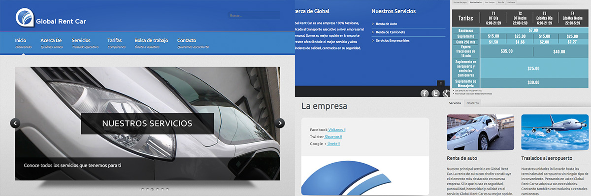

Sitio Web Global Rent Car
Global Rent Car, una empresa mexicana dedicada desde hace más de 20 años al transporte terrestre de nivel ejecutivo. Posicionada como una importante compañia, decidieron actualizar la forma en que sus clientes y competidores los ven. Gracias a mi experiencia fuí llamado por ellos para realizar un estudio que determinara la mejor manera de mostrar su imágen hacia los demás.
La presencia de una empresa en internet el día de hoy es obligada, ya que cada vez más gente en el mundo accede por este medio masivo de comunicación a la información que necesitan. El que un negocio se encuentre bien posicionado respecto a sus competidores hace la diferencia entre un cliente nuevo para nosotros o para ellos.

Un mensaje bien transmitido a través de internet y la elección de la imágen correcta me permitió mostrar la personalidad de la empresa. La armonía entre los colores, las curvas, los tipos y las sombras nos muestra la sobriedad y al mismo tiempo la vanguardia de esta empresa.
Nuestro sitio debe ofrecer toda la información necesaria para que a nuestros clientes no les quede ninguna duda acerca de lo que podemos hacer por ellos. Se deben sentir atraídos hacia el y estar cómodos al navegar por cada una de las páginas.
Descripción Contenidos del sitio
Para definir los contenidos del sitio se tomaron en cuenta seis rubros: Landing Page, acerca de la empresa, servicios que ofrece, sus tarifas, contacto para bolsa de trabajo y contacto de los clientes.
La página principal contiene un slideshow que muestra artículos destacados dentro de la página, sus principales servicios, una breve reseña de la empresa y links a sus redes sociales. La navegación se mantiene lo más limpia posible y el contenido animado está pensado para ser sutil y elegante. El uso de imágenes de alta resolución para su presentación en cada página nos indica la cálidad de sus servicios y refleja su profesionalidad.
"Nuestro sitio debe ser elegante y colorido". Deseamos encontrar la armonía perfecta entre los colores y la elegancia, debe llamar la atención pero sin desviarse demasiado de la imágen empresarial que queremos mostrar a nuestros clientes y competidores. ese es tu trabajo.
Construcción Cómo se hizo
El desarrollo de este sitio comenzó como el de cualquier otro: obtuve los datos necesarios del cliente, generé un brief, tracé la maqueta del sitio, etc. En su codificación se usó la última especificación del lenguaje en su tiempo (HTML5) procediendo metódicamente basado en el brief y la maqueta del mismo. Se usó el protocolo Open Graph para su correcta integración con redes sociales y la codificación está prefectamente ordenada y comentada para permitir su escalabilidad en caso de ser necesario en el futuro.
El uso plugins JavaScript me permitió realizar un trabajo rápido, elegante y funcional, que cumpliera con las espectativas del cliente y que fueran lo suficientemente funcionales para realizar el desarrollo conforme a las especificaciones de la empresa.
"Tu eres el que sabe"